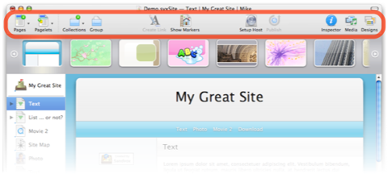

Toolbar
Like many Mac applications, Sandvox collects tools for different functions in a toolbar for easy access.

You can customize the toolbar to better suit yourself.
Ways to customize the toolbar:
- Choose "Customize Toolbar…" from the View menu.
- Control-click the toolbar and choose "Customize Toolbar…" from the contextual menu.
A sheet will appear just below the toolbar containing all the toolbar items available in Sandvox.
You can add items to the toolbar from the sheet by simply clicking and dragging. If you decide you want to return the toolbar to its original state, just click and drag the default set of items.
The following toolbar items are available:
- New
- Adds a new page to the site. Equivalent to the "Insert → New Page" menu.
- Objects
- Adds a new object to the page selected in the Site Navigator. Equivalent to the "Insert → Object" menu.
- Group
- Groups the pages selected in the Site Navigator into a Collection. Equivalent to the "Insert → Group as Collection" menu.
- Create/Edit Link
- Creates or edits a link. Equivalent to the "Edit → Create/Edit Link…" menu.
- Edit Raw HTML
- Opens a window containing the raw HTML for the selected page or object.
- Designs
- Shows or hides the Design Chooser. Equivalent to the "File → Choose Design.." menu.
- Setup Host
- Opens the Host Setup Assistant. Equivalent to the "Publish → Setup Host…" menu.
- Publish
- Publishes any changes the site. Equivalent to the "Publish → Publish Changes" menu. Hold down the option key to change this toolbar item to "Publish All."
- Publish All
- Publishes the entire site, regardless of any previous publication.
- Export
- Exports the entire site to a folder on your computer.
- Inspector
- Shows or hides the Inspector. Equivalent to the "View → Show/Hide Inspector" menu.
- Media
- Shows or hides the Media Browser. Equivalent to the "View → Show/Hide Media Browser" menu.
- Colors
- Opens the standard Mac OS X color panel.
- Fonts
- Opens the standard Mac OS X font panel.
- Separator, Space & Flexible Space
- These tools are for arranging the other items in the toolbar.
- Customize
- Opens the toolbar customization sheet.